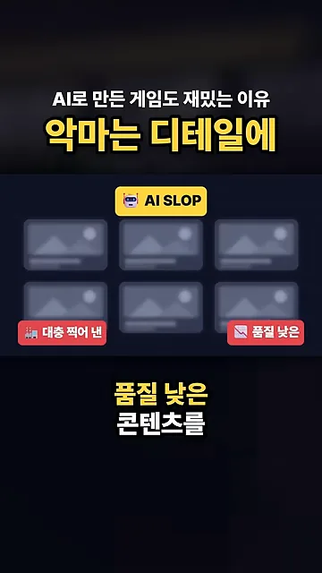
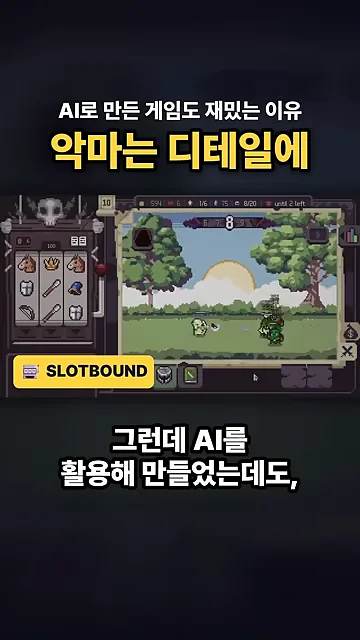
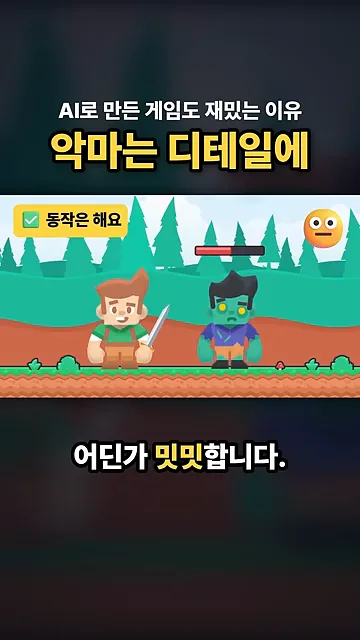
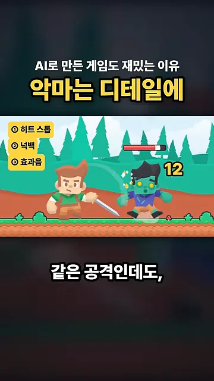
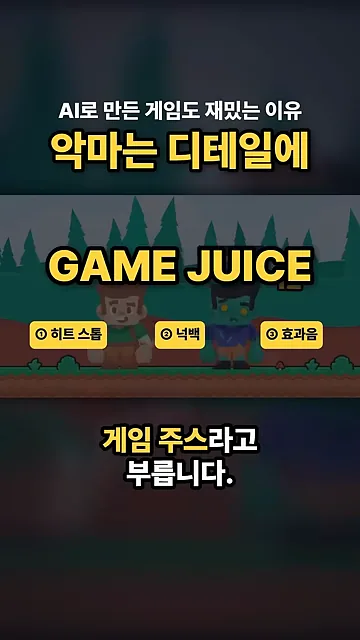
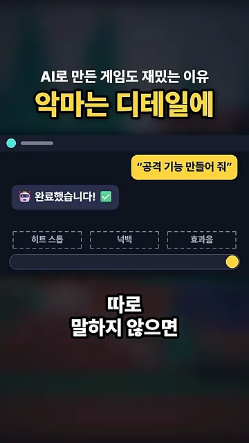
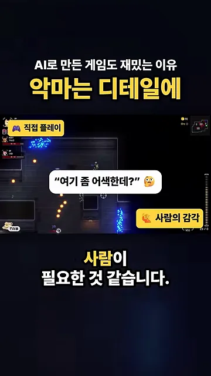
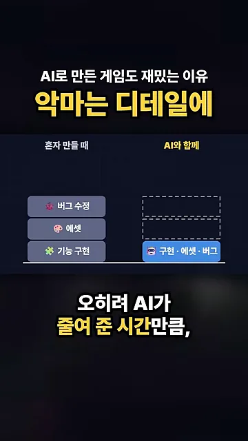
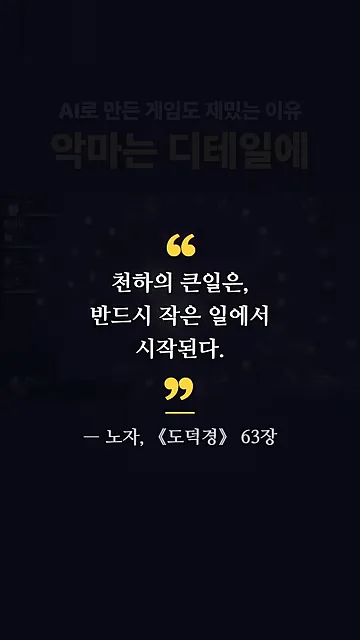

AI 슬롭이라는 말과, 그래도 재밌는 게임
AI 슬롭은 AI로 대충 찍어 낸 품질 낮은 콘텐츠를 부르는 말이에요. 아래 화면은 똑같이 생긴 회색 썸네일 여섯 장을 깔아 두고, 양쪽에 '대충 찍어 낸', '품질 낮은'이라는 빨간 딱지를 붙여서 이 뜻을 보여 줘요.

AI로 만든 게임도 이 말을 자주 들어요. 그런데 영상은 AI를 써서 만들었는데도 재밌는 게임이 분명히 있다고 말해요. 이 대목에서 화면에는 SLOTBOUND라는 픽셀 아트 게임이 예로 나와요. 왼쪽에 슬롯머신 같은 아이템 칸, 오른쪽에 숲속 전투 장면이 보여요.

그럼 둘의 차이는 어디서 생길까요? 말하는 사람의 답은 한 단어, 디테일이에요. 다음 절에서 공격 기능 하나로 그 뜻을 보여 줘요.
공격 하나로 보는 디테일의 차이
AI에게 "공격 기능 만들어 줘"라고 하면 금방 만들어 줘요. 칼을 휘두르면 적 머리 위 체력 바가 줄어들죠. 아래 화면 왼쪽 위에 '동작은 해요'라는 초록 체크가 붙어 있어요. 기능으로는 합격인데, 오른쪽 위의 무표정한 얼굴처럼 해 보면 어딘가 밋밋해요.

여기에 세 가지를 더해요. 맞는 순간 화면을 아주 잠깐 멈추는 히트 스톱, 적을 살짝 뒤로 밀어내는 넉백, 효과음을 때리는 순간에 맞추는 것이에요. 아래 화면 왼쪽 위에 이 세 항목이 붙어 있고, 적이 뒤로 밀리면서 '12'라는 피해 숫자가 튀어 올라요.

| AI가 만들어 준 그대로 | 디테일을 더한 뒤 | |
|---|---|---|
| 칼을 휘두르면 | 적 체력이 줄어들어요 | 적 체력이 줄어들어요 |
| 맞는 순간 | 그냥 지나가요 | 화면이 아주 잠깐 멈춰요(히트 스톱) |
| 적의 움직임 | 제자리에 있어요 | 살짝 뒤로 밀려나요(넉백) |
| 소리 | 타이밍이 맞지 않아요 | 때리는 순간에 맞춰 나와요 |
| 해 본 느낌 | 밋밋해요 | 손맛이 확 달라져요 |
이렇게 손맛을 살리는 연출을 통틀어 게임 주스라고 불러요. 아래 화면은 세 항목을 'GAME JUICE'라는 큰 글자 아래에 나란히 묶어서, 이 셋이 하나의 이름으로 불린다는 걸 보여 줘요.

AI가 챙기지 않는 부분은 사람의 몫
말하는 사람도 처음에는 이런 걸 몰라서 AI가 만들어 준 그대로 넘어간 적이 많았다고 해요. 아래 화면이 그 상황이에요. "공격 기능 만들어 줘"라는 요청에 AI는 '완료했습니다'라고 답했지만, 그 아래 히트 스톱·넉백·효과음 칸은 점선으로 비어 있어요.

그래서 결국 직접 해 보고 "여기 좀 어색한데" 하고 느끼는 사람이 필요해요. 아래 화면은 '직접 플레이' 중인 어두운 던전 게임 위에 그 말풍선을 띄우고, 오른쪽 아래에 '사람의 감각'이라는 딱지를 붙였어요.

AI로 만들었다는 것만으로 AI 슬롭이 되지는 않아요. 아래 화면은 시간을 어디에 쓰는지를 두 막대로 비교해요. 왼쪽 '혼자 만들 때'는 기능 구현, 에셋, 버그 수정이 세 칸을 다 차지해요. 오른쪽 'AI와 함께'는 그 셋이 맨 아래 한 칸으로 줄고, 위 두 칸이 점선으로 비어 있어요.

말하는 사람은 요즘 직접 해 보면서 하나씩 다듬고 있다고 해요. 영상은 노자의 한 문장으로 끝나요. 제목의 '악마는 디테일에 있다'와 같은 이야기예요.
